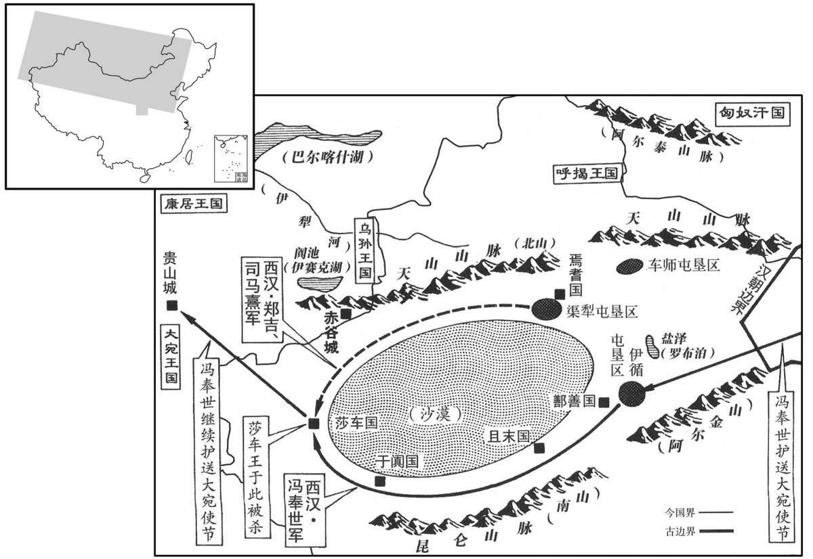

公元前65年资治通鉴：本年记事、原文与白话对照
按原书编年位置阅读；追叙和史论不等于本年发生的事件。白话采用所据译本，缺译不以生成译文补齐。
卷25 · 本年记事
公元前65年 · 汉中宗孝宣皇帝元康元年
元康元年〔（丙辰、前六五）〕
上传原文的注释括号有异常，字符原样保留；无法可靠划分的段落默认全文显示。
本年事件索引（现代整理）
春，正月，龟兹王及其夫人来朝；皆赐印绶，夫人号称公主，赏赐甚厚。
春季，正月，龟兹王及其夫人前来朝见汉宣帝。汉宣帝赐给他们印信、绶带，封其夫人公主称号，并给予十分丰厚的赏赐。
初作杜陵。徙丞相、将军、列侯、吏二千石、訾百万者杜陵。〔时以京兆杜县东原上为初陵，更名杜县曰杜陵。訾，读曰赀。〕
汉宣帝开始为自己修建陵墓杜陵，并将丞相、将军、列候、二千石官员以及拥有百万以上家财的人迁往杜陵。
三月，诏以凤皇集泰山、陈留，甘露降未央宫，赦天下。
三月，汉宣帝下诏，因有凤凰聚集于泰山、陈留一带，又有甘露降于未央宫，所以大赦天下。
有司复言悼园宜称尊号曰皇考；〔本始元年，谥亲曰悼，置园邑。复，扶又翻。〕夏，五月，立皇考庙。
有关官员再次进言：汉宣帝的父亲刘进应尊称为“皇考”。夏季，五月，建立皇考庙。
冬，置建章卫尉。〔未央、长乐、建章、甘泉皆有卫尉，各掌其宫门卫屯兵。〕
冬季，设置建章卫尉。
赵广汉好用世吏子孙新进年少者，〔师古曰：言旧吏家子孙，而其人后出求进，又年少也。好，呼到翻。少，诗照翻。〕专厉强壮蠭气，〔师古曰：蠭与锋同，言锋锐之气。〕见事风生，无所回避，〔师古曰：风生，言其速疾不可当也。回，曲也。〕率多果敢之计，莫为持难，终以此败。广汉以私恐论杀氻子荣畜，〔初，广汉客私酤酒长安市，丞相吏逐去。客疑男子苏贤言之，以语广汉，案贤。贤父上书讼罪，广汉坐贬秩；疑其邑子荣畜教令，以他法论杀畜。荣，姓也；周有荣公，子孙以为氏。〕人上书言之，事下丞相、御史按验。〔下，遐稼翻；下同。〕广汉疑丞相夫人杀侍婢，欲以此胁丞相，丞相按之愈急。广汉乃将吏卒入丞相府，召其夫人跪庭下受辞，〔师古曰：受其对辞也。〕收奴婢十余人去。丞相上书自陈，事下廷尉治，实丞相自以过谴笞傅婢，出至外第乃死，不如广汉言。帝恶之，〔恶，乌路翻。〕下广汉廷尉狱。吏民守阙号泣者数万人：〔号，户刀翻。〕“臣生无益县官，愿代赵京兆死，使牧养小民！”〔汉书本传，“臣生”之上有“或言”二字。〔【章：甲十五行本“臣”上正有“或言”二字；乙十一行本同；孔本同；退斋校同。】〕广汉竟坐要斩。〔要，与腰同。考异曰：本纪：“元康二年，冬，广汉有罪要斩。”百官表：“本始三年，广汉为京兆尹；六年，要斩。元康元年，守京兆尹、彭城太守遗。”按广汉传，司直萧望之劾奏广汉摧辱大臣，望之自司直为平原太守。元康元年，自平原太守为少府。然则广汉死当在元康元年，本纪误也。广汉传又云：“地节三年七月，丞相婢自绞死。”盖婢死已数年，而广汉追发其事也。〕广汉为京兆尹，廉明，威制豪强，小民得职，〔师古曰：得职，各得其常所也。〕百姓追思歌之。
京兆尹赵广汉喜欢任用那些世代为吏者的子孙中刚开始在官府任职的年轻人，专门锻炼他们的强猛和锐气。他们办事雷厉风行，无所回避，大多有胆识，不知犹豫为难，但最终却因此而败亡。赵广汉出于私人的怨恨，将一名叫作荣畜的男子判处死刑。有人上书朝廷告发此事，汉宣帝命丞相、御史负责审查。赵广汉怀疑丞相魏相的夫人曾杀死婢女，便打算用此事来威胁丞相，但丞相却加紧了审查。于是，赵广汉亲自率领官吏、兵卒进入丞相府，召丞相夫人前来，跪在院中接受盘问，并抓走了相府奴婢十余人。丞相魏相上书汉宣帝为自己辩白，汉宣帝命廷尉负责处理。经调查证明，是丞相自己因一名婢女犯有过失，加以责打，送到外宅后才死去，并非像赵广汉说的那样。汉宣帝厌恶赵广汉的行为，下令将赵广汉逮捕，关押在廷尉狱中。官吏和百姓听说赵广汉被捕，纷纷守在皇宫门前号哭，达数万人之多。有人说：“我活着对皇上并无益处，情愿代崐替赵京兆去死，让他留下来照管小民！”然而赵广汉终于被腰斩。赵广汉身为京兆尹，廉洁明察，以威严抑制豪强，使小民各得其所，受到百姓的思念和歌颂。
是岁，少府宋畴坐议“凤皇下彭城，未至京师，不足美”，贬为泗水太傅。〔傅泗水王综。〕
这一年，少府宋畴因声称“凤凰飞集彭城，未到长安，不足以赞美”，受到指控，被贬为泗水国太傅。
上选博士、谏大夫通政事者补郡国守相，以萧望之为平原太守。望之上疏曰：“陛下哀愍百姓，恐德之不究，〔师古曰：究，竟也。谓周偏于天下。〕悉出谏官以补郡吏。朝无争臣，则不知过，〔朝，直遥翻。争，读曰诤。〕所谓忧其末而忘其本者也。”上乃征望之入守少府。
汉宣帝征选通晓政务的博士、谏大夫充任郡太守和封国丞相，任命萧望之为平原太守。萧望之上书汉宣帝说：“陛下哀怜百姓，唯恐恩德不能遍及天下，将朝中谏官全部派到各郡、国掌管地方事务。但朝中缺少直谏之臣，就不能使陛下了解朝政的缺失，这正是所谓只忧虑末梢而忘记了根本。”于是汉宣帝征调萧望之担任少府。
东海太守河东尹翁归，以治郡高第入为右扶风。翁归为人，公廉明察，郡中吏民贤、不肖及奸邪罪名尽知之。县县各有记籍，自听其政；〔师古曰：言决断诸县奸邪之事不委令、长也。〕有急名少缓之。吏民小解，辄披籍。〔服虔曰：披有罪者籍也。师古曰：解，读曰懈。〕取人必于秋冬课吏大会中及出行县，〔师古曰：于大会之中及行县时，则取罪人以警众。行，下孟翻。下改行、以行，同。〕不以无事时。其有所取也，以一警百。吏民皆服，恐惧，改行自新。其为扶风，选用廉平疾奸吏以为右职，〔职居诸吏之上，为右职。〕接待有〔【章：甲十五行本“有”作“以”；乙十一行本同；孔本同。】〕礼，好恶与同之；〔好，呼到翻。恶，乌路翻。〕其负翁归，罚亦必行。然温良谦退，不以行能骄人，故尤得名誉于朝廷。
东海太守河东人尹翁归，因治理郡务成绩优等，被调入京担任右扶风一职。尹翁归为人公正、廉洁、明察，对郡中官吏和普通百姓的好坏及奸邪之徒的罪状无不尽知。他对治下每个县的情况都有专门记载，亲自处理各县的政务。凡遇下属处理事务过于苛急，他便命其稍加平缓；如属下官吏办事稍有懈怠，他则亲自查阅有关记载督促。尹翁归逮捕罪犯，都在秋冬考核官吏大会中，或出巡各县之际，而不在平日无事时进行。他逮捕罪犯，目的在于以一警百。官吏和百姓全都敬服，心怀恐惧，改过自新。尹翁归出任右扶风，选用清廉公正、疾恶如仇的官员担任高级职务；待人接物注重礼节，无论自己喜欢还是厌恶，都同样对待；但对违抗命令者，也必加处罚。然而尹翁归为人温和谦虚，从不依恃自己的才能看不起别人，因此在朝中尤其受人赞誉。
初，乌孙公主少子万年有宠于莎车王。〔班书，莎车国王治莎车城，去长安九千九百五十里。莎，苏禾翻。〕莎车王死而无子，时万年在汉，莎车国人计，欲自托于汉，又欲得乌孙心，上书请万年为莎车王。汉许之，遣使者奚充国送万年。〔姓谱：奚姓，夏车正奚仲之后。〕万年初立，暴恶，国人不说。〔说，读曰悦；下同。〕
当初，嫁与乌孙王的汉朝公主的小儿子万年受到莎车王的宠爱。莎车王死后，没有儿子，当时万年正在汉朝，莎车国人商议，既想托庇于汉朝，又想取得乌孙国的欢心，于是上书汉朝廷，请求立万年为莎车王。汉朝同意所请，派使者奚充国护送万年前往莎车。万年刚当上莎车国王，就非常残暴凶恶，莎车人深为不满。
上令群臣举可使西域者，前将军韩增举上党冯奉世以卫候使持节送大宛诸国客至伊循城。〔卫候，卫士候也。伊循城在鄯善国，汉于其中置屯田吏士。使，疏吏翻。〕会故莎车王弟呼屠征与旁国共杀其王万年及汉使者奚充国，自立为王。时匈奴又发兵攻车师城，不能下而去。莎车遣使扬言“北道诸国已属匈奴矣”，〔扬言，谓宣扬其言于外也。〕于是攻劫南道，与歃盟畔汉，从鄯善以西皆绝不通。〔歃，色甲翻。鄯，上扇翻。〕都护郑吉、校尉司马憙皆在北道诸国间，奉世与其副严昌计，以为不亟击之，则莎车日强，其势难制，必危西域，遂以节谕告诸国王，因发其兵，南北道合万五千人，进击莎车，攻拔其城。莎车王自杀，传其首诣长安，更立他昆弟子为莎车王。〔更，工衡翻。〕诸国悉平，威振西域，奉世乃罢兵以闻。帝召见韩增曰：“贺将军所举得其人。”
汉宣帝命群臣举荐能够出使西域的人选。经前将军韩增举荐，上党人冯奉世以卫候身份充当使者，携带皇帝符节，护送大宛等国客人到达伊循城。正巧前莎车王的弟弟呼屠徵联合邻国势力一同杀死其王万年和汉朝使者奚充国，自立为莎车王。当时，匈奴再次出兵攻打车师城，未能攻下，撤兵而还。莎车国派使者扬言：“西域北路各国已归属匈奴了。”于是派兵攻打南路各国，与各国结盟，背叛汉朝，使西域自鄯善国以西全部与汉朝绝交。此时都护郑吉崐、校尉司马都在北路各国间，冯奉世与其副使严昌商议，认为如不立即攻击莎车，那么莎车将日益强盛，难以控制，必定危及整个西域。于是以皇帝符节告谕各国国王，征调各国军队，南北两路共一万五千人，进攻莎车。结果莎车城被攻克，莎车王自杀，首级被送至长安，改立前莎车王其他兄弟的儿子为莎车王，冯奉世率兵将各国全部平定，威震西域，然后罢兵，奏闻朝廷。汉宣帝召见韩增说：“祝贺将军，你举荐的人非常出色。”
奉世遂西至大宛；大宛闻其斩莎车王，敬之异于他使，得其名马象龙而还。〔师古曰：言马形似龙者。仲冯曰：此马名曰象龙也。宛，于元翻。还，从宣翻，又如字。〕上甚说，〔说，读曰悦。〕议封奉世。丞相、将军皆以为可，独少府萧望之以为“奉世奉使有指，〔师古曰：本为送诸国客。〕而擅〔【章：甲十五行本“擅”下有“矫”字；乙十一行本同；孔本同。】〕制违命，发诸国兵，虽有功效，不可以为后法。即封奉世，开后奉使者利以奉世为比，〔师古曰：比，必寐翻。余谓当音毗寐翻。〕争逐发兵，要功万里之外，〔师古曰：逐，竞也。要，一遥翻。〕为国家生事于夷狄，渐不可长。〔为，于伪翻。长，知两翻。〕奉世不宜受封。”上善望之议，以奉世为光禄大夫。
冯奉世于是西至大宛，大宛王听说他杀死了莎车王，所以对他特别恭敬，与对别的使臣不同，大宛国向汉朝皇帝进献了一匹叫作象龙的名马，冯奉世将其带回长安。汉宣帝大为高兴，与朝臣商议，打算封冯奉世为侯。丞相、将军等都认为可以，只有少府萧望之表示反对，他认为：“冯奉世作为朝廷的使臣，有指定的任务，而他却违背使命，擅自用皇上的名义征调各国军队，虽然建立功勋，却不能让后人效法。如封冯奉世为侯，以后奉命出使的人将以他为榜样，争着征调各国军队，以图建功于万里之外，使国家在外族地区多生事端，此风不可渐长。因此，冯奉世不宜受封。”汉宣帝认为萧望之的话很有道理，于是任命冯奉世为光禄大夫，没有封侯。
